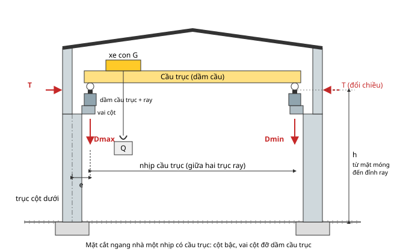

Bài 18.1. Tải cầu trục TCVN 2737:2023 Crane loads to TCVN 2737:2023
Cầu trục truyền lên khung ngang ba lực: áp lực đứng lớn nhất $D_{\max}$, nhỏ nhất $D_{\min}$ và lực hãm ngang $T$. Cả ba đều tính bằng đường ảnh hưởng phản lực gối của dầm cầu trục.
- Xác định $\sum y_i$, $D_{\max}$, $D_{\min}$, $T$ theo TCVN 2737:2023 điều 9 từ số liệu catalogue cầu trục.
- Nhận ra các khác biệt so với TCVN 2737:1995 ($\gamma_f$, $\psi_t$) mà bảng tính cũ của khóa còn dùng.
1. Tình huống
Giả sử nhà xưởng Hòa Bình (nhịp 50 m) được bổ sung một cầu trục 15 T, chế độ trung bình, số liệu như bảng tính 03.2 của khóa: $P^c_{\max}$ = 108 kN, $K$ = 2115 mm. Bảng tính cũ cho $D_{\max}$ = 170,6 kN theo TCVN 2737:1995. Hồ sơ mới phải theo TCVN 2737:2023, nên kỹ sư cần tính lại và biết tải lên cột tăng bao nhiêu.
2. Quy định tiêu chuẩn

Số liệu cầu trục và thuật ngữ
| Ký hiệu | Ý nghĩa | Ví dụ (bảng tính 03.2 của khóa) |
|---|---|---|
| $Q$ | Sức nâng | 15 T = 150 kN |
| $P^c_{\max}$, $P^c_{\min}$ | Áp lực tiêu chuẩn lớn nhất và nhỏ nhất của một bánh xe lên ray (xe con ở sát một bên) | 108 kN; 27,9 kN |
| $G_{xc}$ | Trọng lượng xe con (xe tời) | 11,85 kN |
| $n_0$ | Số bánh xe ở một bên cầu trục | 2 |
| $K$ | Khoảng cách hai bánh xe (đế bánh) | 2115 mm |
| Chế độ làm việc | Nhóm A1–A8 theo TCVN 8590-1:2010 (ISO 4301-1) | "Trung bình", tương ứng A4–A5 |
| $B$ | Bước cột, cũng là nhịp dầm cầu trục | 6,8 m trong phần tính tải; 8,5 m trong phần kiểm tra dầm |
Bảng 18.1. Số liệu cầu trục dùng trong chương
Các số liệu $P^c_{\max}$, $P^c_{\min}$, $G_{xc}$, $K$ lấy theo catalogue của nhà sản xuất cầu trục (TCVN 2737:2023 mục 9.2), không tự tính.
Bảng tính 03.2 Bang tinh cau truc -1CT 15 T-DH- 8.5m có ba vấn đề cần sửa trước khi dùng:
- Dùng TCVN 2737:1995: $n = 1{,}1$, $n_c = 0{,}85$, hệ số động $k_1 = 1{,}1$.
- Phần đường ảnh hưởng dùng nhịp dầm 6,8 m ($a = b = 3400$ mm, $y_2 = 0{,}689$). Phần kiểm tra tiết diện lại dùng $l$ = 8,5 m. Hai nhịp không thống nhất.
- Nhiều ô báo lỗi
#NAME?và#REF!: bảng tính phụ thuộc hàm macro và liên kết ngoài đã mất. Tệp còn chứa trang macro Excel 4.0 ẩn (xem Chương 7). Kết quả kiểm tra tiết diện vì thế không đọc được.
Tải trọng cầu trục theo TCVN 2737:2023
Các quy định chính (điều 9)
| Nội dung | TCVN 2737:2023 | TCVN 2737:1995 (bảng tính cũ) |
|---|---|---|
| Hệ số độ tin cậy $\gamma_f$ (9.8) | 1,2 cho mọi chế độ làm việc | 1,1 |
| Hệ số động $\eta$ khi tính dầm cầu trục và liên kết (9.10) | 1,2, không phụ thuộc bước cột. Không dùng khi tính mỏi, độ võng, chuyển vị cột, hoặc tác dụng cục bộ | 1,1 hoặc 1,2 tùy chế độ và bước cột |
| Hệ số tổ hợp $\psi_t$ (9.18) | 1 cầu trục: 1,0; 2 cầu trục: 0,85 (A1–A6), 0,95 (A7–A8); 4 cầu trục: 0,70 hoặc 0,80 | 0,85 (bảng tính áp cả khi chỉ có 1 cầu trục) |
| Hãm xe con, ngang nhà (9.4) | $0{,}05(Q + G_{xc})$ với móc mềm, $0{,}1(Q + G_{xc})$ với móc cứng, truyền về một bên đường cẩu và chia đều cho các bánh xe bên đó | Như nhau |
| Hãm cầu trục, dọc nhà (9.3) | $0{,}1 \times$ tải đứng tiêu chuẩn lên các bánh xe hãm (khi không có số liệu, lấy nửa số bánh) | Như nhau |
| Lực xô ngang (9.5) | $0{,}2P$ mỗi bánh, chỉ với A7–A8, chỉ cho dầm cầu trục và liên kết. Không xét đồng thời với 9.4 | – |
| Hệ số cục bộ $\gamma_{f1}$ (9.9) | 1,2 (A1–A5); 1,4 (A6); 1,6 (A7); 1,7–1,8 (A8). Dùng khi tính ứng suất cục bộ dưới bánh xe | – |
| Số cầu trục xét (9.11, 9.12) | Dầm cầu trục: ≤ 2. Khung: ≤ 2 trên mỗi đường cẩu, ≤ 4 khi xét nhiều nhịp | – |
| Độ võng, chuyển vị (9.16) | Chỉ xét 1 cầu trục, không có hệ số động | – |
Bảng 18.2. Tải trọng cầu trục – TCVN 2737:2023 so với 1995
Tải trọng lên khung ngang
Đặt các bánh xe trên đường ảnh hưởng phản lực gối của dầm cầu trục (dầm đơn giản hai nhịp kề nhau), một bánh nằm đúng trên cột:
với $T^c_1 = 0{,}05(Q + G_{xc})/n_0$ (móc mềm). Với một cầu trục hai bánh mỗi bên: $\sum y_i = 1 + (1 - K/B)$.
$D_{\max}$, $D_{\min}$ đặt tại trục ray, tức lệch tâm $e$ so với trục cột dưới, nên sinh mô men $M = D\cdot e$ tại vai cột. $T$ đặt tại cao trình đỉnh ray (hoặc cao trình dầm hãm), có thể hướng vào trong hoặc ra ngoài nhịp.
3. Khám phá
Đổi bước cột, đế bánh, số cầu trục và xem đường ảnh hưởng, $\sum y$ cùng tải lên khung theo ba tiêu chuẩn. Mặc định là cầu trục 15 T của Ví dụ 18.1.
4. Ví dụ tính toán
$T^c_1 = 0{,}05 \times (150 + 11{,}85)/2 = 4{,}046$ kN.
Lời giải
| Đại lượng | Bảng tính khóa (1995, $B$ = 6,8 m) | TCVN 2737:2023, $B$ = 6,8 m | TCVN 2737:2023, $B$ = 8,5 m |
|---|---|---|---|
| $\sum y$ | 1,689 | 1,689 | 1,751 |
| Hệ số | $n \cdot n_c = 1{,}1 \times 0{,}85 = 0{,}935$ | $\gamma_f \psi_t = 1{,}2 \times 1{,}0 = 1{,}2$ | 1,2 |
| $D_{\max}$ (kN) | 170,6 | 218,9 | 227,0 |
| $D_{\min}$ (kN) | 44,1 | 56,5 | 58,6 |
| $T$ (kN) | 6,39 | 8,20 | 8,50 |
Bảng 18.3. Tải trọng cầu trục 15 T lên khung
Tải lên khung tăng 28 % khi chuyển sang TCVN 2737:2023. Hai nguyên nhân là $\gamma_f$ tăng (1,1 → 1,2) và việc dùng đúng $\psi_t = 1{,}0$ cho một cầu trục.
5. Lỗi thường gặp
- Giữ $n_c = 0{,}85$ khi nhà chỉ có một cầu trục: TCVN 2737:2023 cho $\psi_t = 1{,}0$.
- Lấy $\sum y$ theo bước cột 6,8 m trong khi dầm cầu trục được kiểm tra với nhịp 8,5 m.
6. Luyện tập
Theo TCVN 2737:2023 mục 9.8, hệ số độ tin cậy $\gamma_f$ của tải trọng cầu trục là:
Gợi ý
Xem Bảng 18.2, dòng $\gamma_f$.
Lời giải
TCVN 2737:2023 lấy $\gamma_f = 1{,}2$ cho mọi chế độ; TCVN 2737:1995 dùng 1,1.
Cầu trục có đế bánh $K$ = 2,115 m, bước cột $B$ = 6 m, một cầu trục, hai bánh mỗi bên. Tính $\sum y_i$.
Gợi ý
Một bánh trên cột: $\sum y_i = 1 + (1 - K/B)$.
Lời giải
$\sum y_i = 1 + (1 - 2{,}115/6) = 1 + 0{,}6475 = 1{,}648$.
Cầu trục 20 T (số liệu giả định): $P^c_{\max}$ = 150 kN, $K$ = 4,4 m, bước cột 6 m, nhà có một cầu trục. Tính $D_{\max}$ theo TCVN 2737:2023.
Gợi ý
$\gamma_f = 1{,}2$; $\psi_t = 1{,}0$; $\sum y = 2 - K/B$.
Lời giải
$\sum y = 2 - 4{,}4/6 = 1{,}2667$; $D_{\max} = 1{,}2 \times 1{,}0 \times 150 \times 1{,}2667 = 228{,}0$ kN.
- $D_{\max} = \gamma_f\psi_tP^c_{\max}\sum y_i$; một cầu trục hai bánh: $\sum y_i = 2 - K/B$.
- Ví dụ 18.1: $D_{\max}$ = 218,9 kN (TCVN 2023, $B$ = 6,8 m) so với 170,6 kN của bảng tính 1995, tăng 28 %.
- $T^c_1 = 0{,}05(Q + G_{xc})/n_0$ với móc mềm, truyền về một bên đường cẩu.